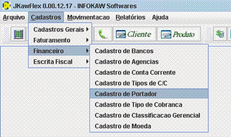

![[IMAGE]](images/barracad.gif)
![[IMAGE]](images/barracad2.gif)
|  | 1. Para efetuar o CADASTRO DE PORTADOR, selecione na barra de Menu a opção CADASTROS, em seguida FINANCEIRO, e CADASTRO DE PORTADOR. |
|
2. Antes de preencher os campos, clique em INSERIR NOVO REGISTRO situado na barra de Opções. |
|
3. Após preencher os campos, clique no botão VALIDAR REGISTRO CORRENTE situado na barra de Opções, e em seguida clique no botão SALVAR. |